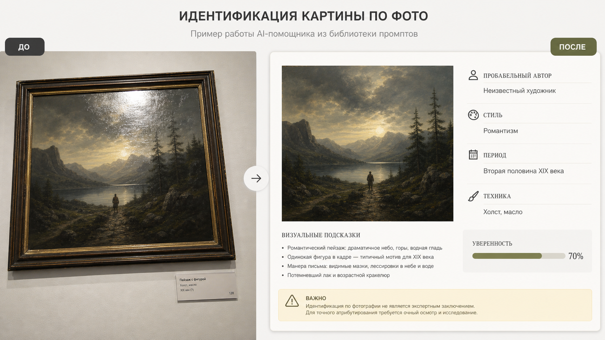

Промтзилла
Такой запрос удобен, когда нужно быстро понять, что за картина перед тобой: ИИ разбирает композицию, манеру письма, сюжет и даёт аккуратную гипотезу.

Пошаговая инструкция
- 1Сфотографируй картину целиком: рама, подпись, табличка и общий вид часто важны для атрибуции.
- 2Загрузи фото в инструмент определения картины по фото.
- 3Вставь промт и попроси явно указать уровень уверенности.
- 4Если есть подпись или музейная табличка, отправь отдельный крупный фрагмент.
- 5Проверь результат по музейным каталогам, аукционным базам или экспертным источникам.
Пример результата
На обложке показан типичный сценарий: слева обычное исходное фото, справа результат, который можно получить после анализа через инструмент определения картины по фото.
Промт
RU
Проанализируй фото картины и попробуй определить произведение. Сделай ответ в формате музейной карточки: — вероятное название; — вероятный автор или школа; — эпоха и стиль; — техника и материал; — сюжет и композиция; — визуальные признаки, на которых основан вывод; — уровень уверенности; — похожие авторы или произведения, если точной версии нет; — что нужно сфотографировать крупнее: подпись, оборот, раму, табличку, фактуру мазков. Важно: не выдавай атрибуцию за экспертное заключение. Если фото недостаточно качественное или картина похожа на стилизацию, напиши это прямо.
EN
Analyze the photo of the painting and try to identify the artwork. Format the answer as a museum catalog card: — probable title; — probable artist or school; — period and style; — technique and material; — subject and composition; — visual clues behind the conclusion; — confidence level; — similar artists or artworks if exact identification is not possible; — what should be photographed closer: signature, back side, frame, label, brush texture. Important: do not present attribution as expert authentication. If the photo quality is insufficient or the painting looks like a stylization, state that clearly.
Важно
Нейросеть может помочь с первичным ориентиром, но не заменяет искусствоведческую экспертизу, проверку происхождения и физический осмотр работы.
Теги